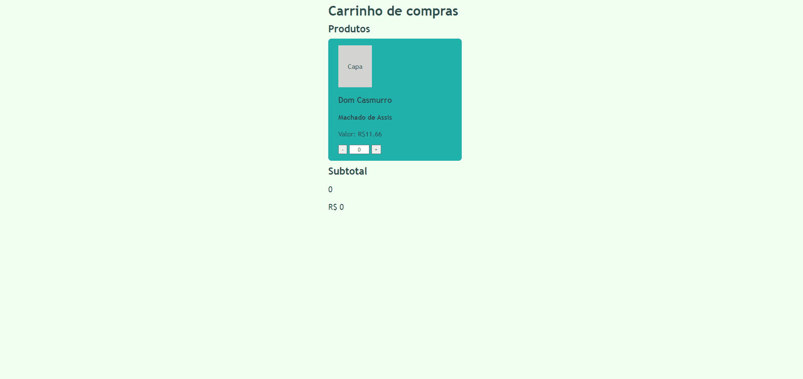
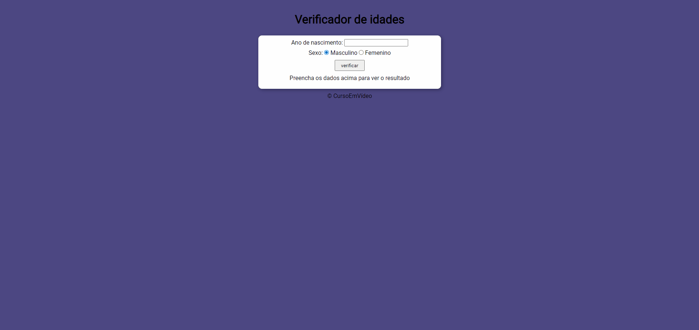

Meus projetos :



Simulando carrinho de compras
Tecnologias utilizadas → HTML | CSS | JavaScript
Veja o projeto real

Projeto verficador de idade
Tecnologias utilizadas → HTML | CSS | JavaScript
Veja o projeto real